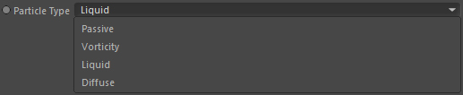

Parameters
Parameters

Particle Group

The Particle group used to find the nearest particle (in the radius defined by Ratio) and to calculate the distance to.
Particle Type

The particle type to use from the Particle Group for finding the distance to.
Ratio
The radius to find the nearst particle in. Particles further than this distance to the location the caller node currently processes are automatically excluded.